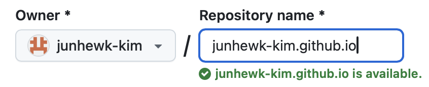
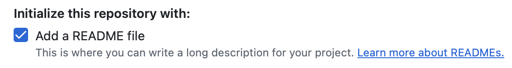
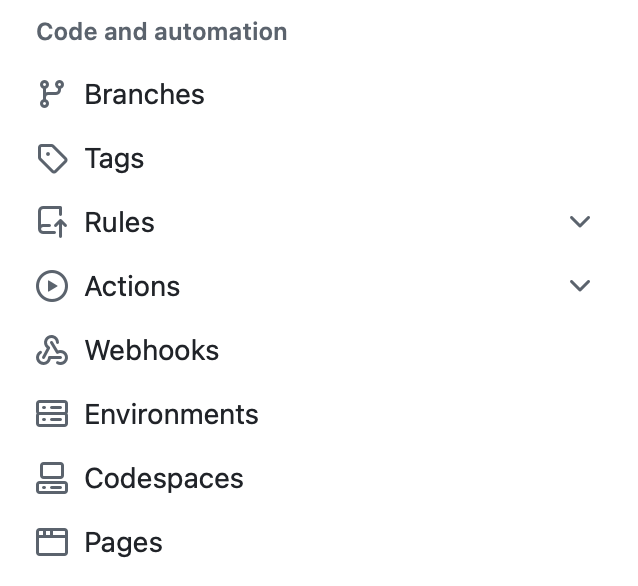
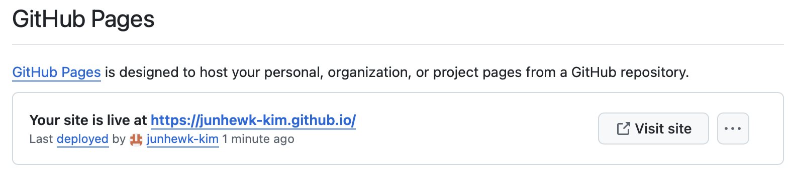
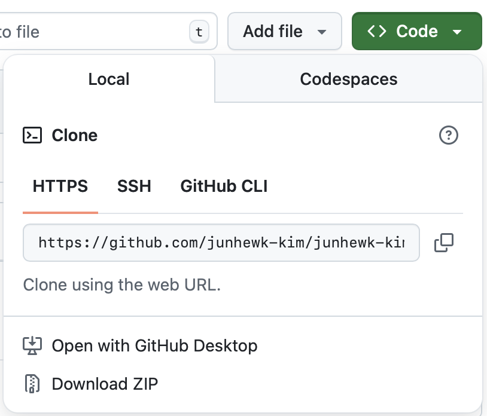
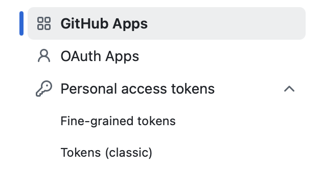
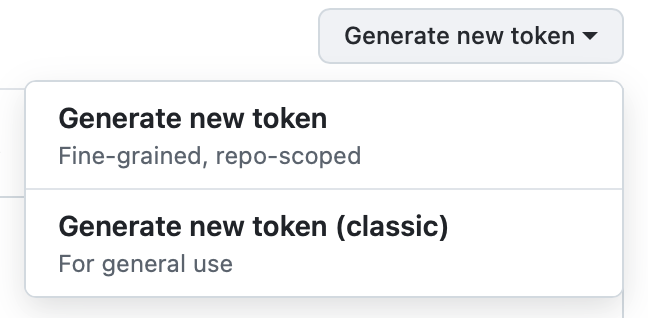
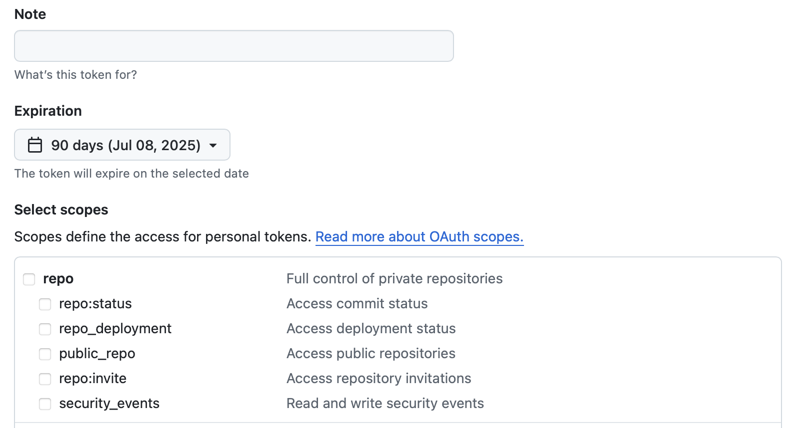
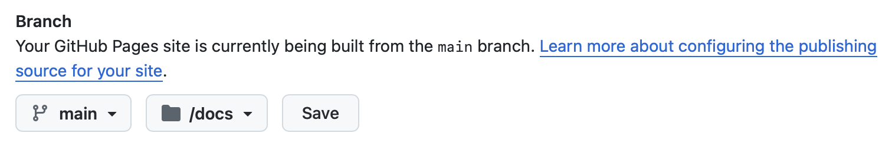
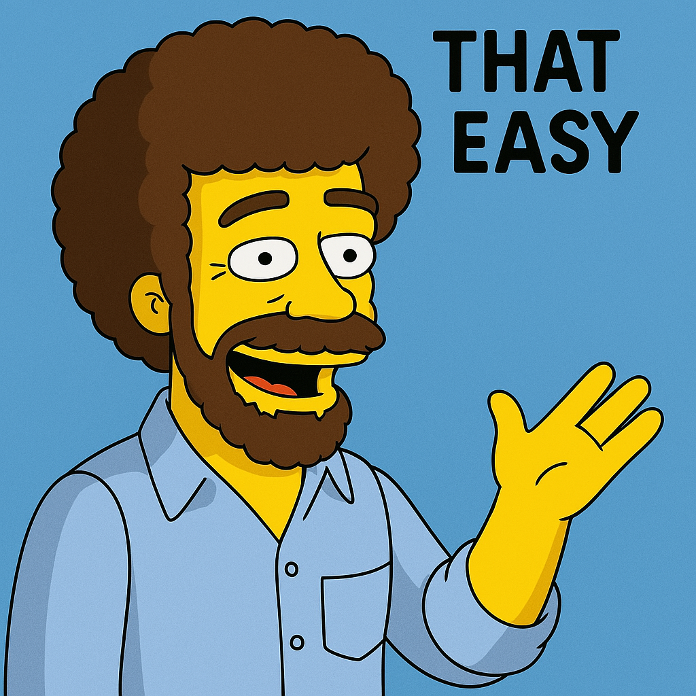

블로그 제작의 변
새로 블로그를 시작하기로 했습니다(이전 블로그에겐 미안하지만…) 블로그 작업에 있어서 고려한 점은 다음과 같습니다.
- 코드(R/Python)이나 LLM 프롬프트를 올려 놓을 공간이 있었으면 좋겠다.
- 안 올려놓으면 여기저기 돌아다니다가 사라지는데, 나중에 비슷한 작업을 할 때 다시 찾아야 한다.
- 주로 업무에 활용하는 코드/프롬프트를 올려 놓으면 다른 사람들한테도 도움이 될 것 같다.
해서 만들기 시작했지만, 이전(지난번엔 Jekyll에 plugin 붙이고 하는 작업을 열심히 했던 것 같습니다)처럼 작업을 위한 툴을 하나하나 배우거나 깔 시간은 없어서, 빠르게 만들 수 있는 툴을 찾아보니 Quarto[https://quarto.org/]로 작업을 하는 방식이 있더라고요. 어차피 제가 코드를 올릴 만한 것들은 주로 R 작업물일테니(Python은 굳이 제가…?), RStudio에서 Quarto를 돌려서 만드는 작업을 해봐야 겠다고 생각했습니다. 이런저런 오류를 거쳐서 실제 올리는 데까지는 10분 정도 걸렸네요. 만들어서 올리는 내용이 하나로 정리되어 있는 것 같지 않아서 여기까지 작업을 정리합니다.
Github Pages 만들기
물론 Github Docs[https://docs.github.com/en/pages/getting-started-with-github-pages/creating-a-github-pages-site]에 엄청 잘 정리되어 있지만, 순서만 다시 써봅니다.
- Github 가입
- 페이지 오른쪽 위 +를 눌러 New repository를 선택
- Owner에 원하는 계정 선택

Repository name에 주소 넣기: [계정이름].github.io로 만들면 가장 단순(다른 이름으로 넣으면[계정이름].github.io/[설정이름]이 되므로 복잡함)- Visibility는 Public

README.md 파일 포함(체크박스) - Create repository
[계정이름].github.io 레포지토리로 이동
- 상단 메뉴 마지막 Settings 클린

좌측 열 메뉴 “Code and automation” 중 “Pages” 선택 
[계정이름].github.io로 주소 만들었으면 자동으로 Github Pages가 연결되어 있음: Visit site 누르면 페이지 확인 가능
Quarto 설정
Quarto는 이전 Bookdown, distill 패키지에 이어 여러 플랫폼에서 마크다운 기반 출력물을 만들어 내는 서비스라고 해요. 최근 이쪽에 관심을 끄고 살았더니 쓰던 패키지들이 다 새로운 패키지로 갈아 엎어졌네요(제 패키지도 다시 작업을 해야 하나 봅니다). RStudio 상에서 쉽게 페이지 만드는 작업을 지원합니다.
먼저 R과 RStudio를 설치한 다음, Quarto[https://quarto.org/docs/get-started/]에 가서 quarto도 받아 설치합니다.
- RStudio - File - New Project 클릭
- New Directory - Quarto Blog 선택
- 디렉토리 정하고 아래 Create a git repository, Use renv with this project 선택(체크박스)
- Create Project
그러면 새로 프로젝트가 만들어지고 기본 파일이 다 설정됩니다. 블로그 만드는 기본 틀은 이미 완성이 된 건데요, 여기에서 바로 Github 업로드를 위해 파일을 수정합니다. _quarto.yml의 시작 부분을 다음과 같이 수정합니다.
project:
type: website
output-dir: docs다음은 publish - github push입니다.
- terminal을 열어서 project 디렉토리로 이동
quarto render로 지금 내용을 html 출력git initgit add docsgit commit -m "First commit"
git remote add origin [레포지토리 https 주소]git branch -m master main(계속 master로 올라가서 변경)git config pull.ff only(fast-forward로 설정해서 main 병합 해결)git push -f origin main- (git 인증 관련: classic token으로 작업하는 방식이 단순함)
- 이전 인증 리셋:
git config --global --unset credential.helper Github - Settings - Developer settings 
Personal access tokens - Tokens (classic) 
우상단 Generate new token - Generate new token (classic) 
Note에 적당한 이름 넣기 - Expiration 기간 설정 - repo 체크박스 설정 - 만들어진 token이 비밀번호:
git push실행했을 때 Username (계정 이름) 넣고 Password에 생성한 token 넣으면 됨
여기까지 하면 repository에 docs 디렉토리가 올라갑니다. 다음,
- 상단 메뉴 마지막 Settings 클린
- 좌측 열 메뉴 “Code and automation” 중 “Pages” 선택

Branch에서 main - /docs로 드롭다운 메뉴 변경 후 Save
이러면 [계정이름].github.io에 publish한 Quarto blog를 올릴 준비가 끝났습니다!
